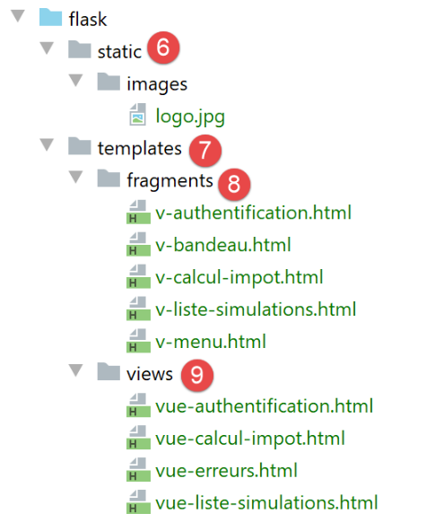
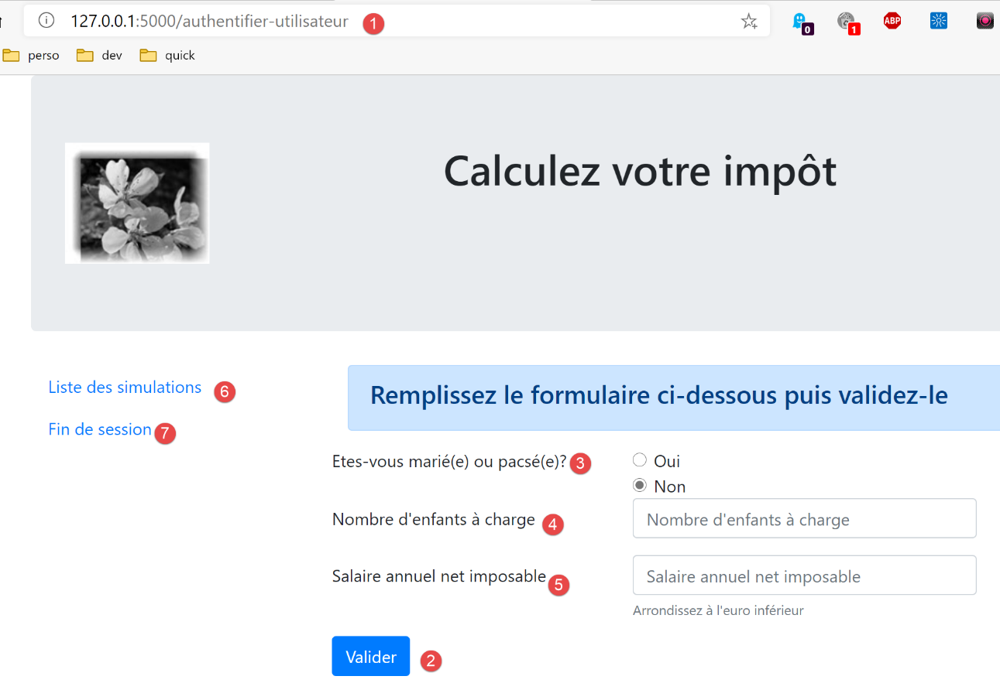
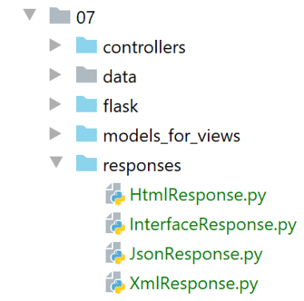
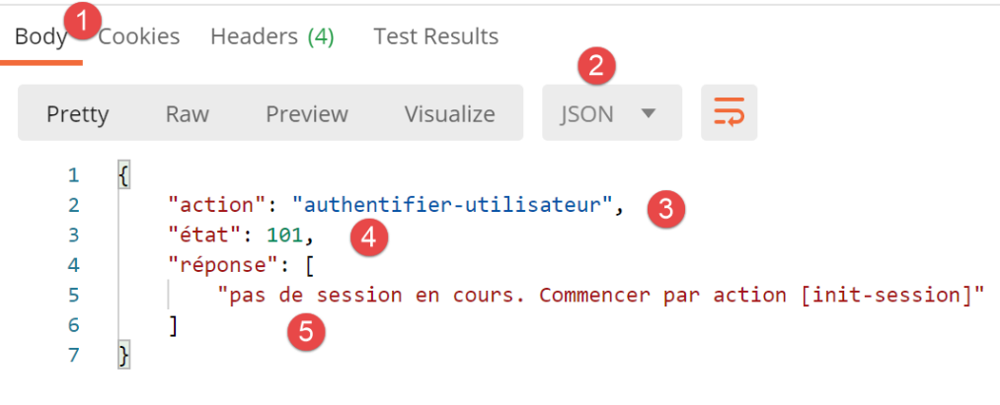
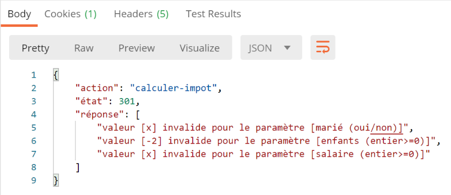
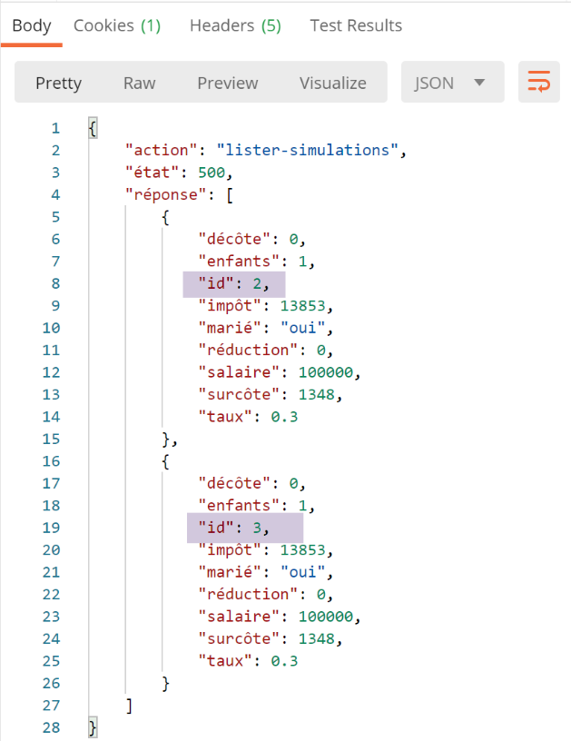
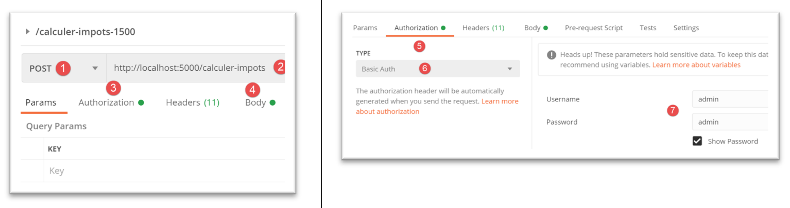

30. Esercizio pratico: Versione 12
In questo capitolo scriveremo un'applicazione web seguendo l'architettura MVC (Model-View-Controller). L'applicazione sarà in grado di restituire risposte in tre formati: JSON, XML e HTML. C'è un aumento significativo di complessità tra ciò che stiamo per fare e ciò che abbiamo fatto in precedenza. Riutilizzeremo la maggior parte dei concetti trattati finora e descriveremo in dettaglio tutti i passaggi che portano all'applicazione finale.
30.1. Architettura MVC
Implementeremo il modello architettonico MVC (Model–View–Controller) come segue:

L'elaborazione di una richiesta del client procederà come segue:
- 1 - Richiesta
Gli URL richiesti avranno il formato http://machine:port/action/param1/param2/… Il [Controller principale] utilizzerà un file di configurazione per "indirizzare" la richiesta al controller corretto. A tal fine, utilizzerà il campo [azione] dell'URL. Il resto dell'URL [param1/param2/…] è costituito da parametri opzionali che verranno passati all'azione. La "C" in MVC qui si riferisce alla catena [Controller principale, Controller / Azione]. Se nessun controller è in grado di gestire l'azione richiesta, il server web risponderà che l'URL richiesto non è stato trovato.
- 2 - Elaborazione
- L'azione selezionata [2a] può utilizzare i parametri che il [Controller principale] le ha passato. Questi possono provenire da due fonti:
- il percorso [/param1/param2/…] dell'URL,
- dai parametri inviati nel corpo della richiesta del client;
- Durante l'elaborazione della richiesta dell'utente, l'azione potrebbe richiedere il livello [business] [2b]. Una volta elaborata la richiesta del client, questa può innescare varie risposte. Un esempio classico è:
- una risposta di errore se la richiesta non è stata elaborata correttamente;
- una risposta di conferma in caso contrario;
- il [Controller / Action] restituirà la sua risposta [2c] al controller principale insieme a un codice di stato. Questi codici di stato rappresenteranno in modo univoco lo stato attuale dell'applicazione. Si tratterà di un codice di successo o di un codice di errore;
- 3 - Risposta
- A seconda che il client abbia richiesto una risposta JSON, XML o HTML, il [Controller principale] istanzierà [3a] il tipo di risposta appropriato e gli darà istruzioni di inviare la risposta al client. Il [Controller principale] gli passerà sia la risposta che il codice di stato fornito dal [Controller/Azione] che è stato eseguito;
- se la risposta desiderata è di tipo JSON o XML, la risposta selezionata formatterà la risposta proveniente dal [Controller/Action] che le è stata fornita e la invierà [3c]. Il client in grado di elaborare questa risposta può essere uno script da console Python o uno script JavaScript incorporato in una pagina HTML;
- se la risposta desiderata è di tipo HTML, la risposta selezionata sceglierà [3b] una delle viste HTML [Vuei] utilizzando il codice di stato che le è stato fornito. Questa è la V in MVC. Una singola vista corrisponde a un singolo codice di stato. Questa vista V visualizzerà la risposta proveniente dal [Controller / Action] che è stato eseguito. Avvolge i dati di questa risposta in HTML, CSS e JavaScript. Questi dati sono chiamati modello di vista. Questa è la M in MVC. Il client è molto spesso un browser;
Ora, chiariamo la relazione tra l'architettura web MVC e l'architettura a livelli. A seconda di come è definito il modello, questi due concetti possono essere correlati o meno. Consideriamo un'applicazione web MVC a singolo livello:

Nell'esempio sopra riportato, il [Controller / Action] incorpora parti dei livelli [business] e [DAO]. Nel livello [web] abbiamo un'architettura MVC, ma l'applicazione nel suo complesso non presenta un'architettura a livelli. Qui c'è un solo livello, quello web, che gestisce tutto.
Ora, consideriamo un'architettura web a più livelli:

Il livello [Web] può essere implementato senza seguire il modello MVC. Abbiamo quindi un'architettura a più livelli, ma il livello Web non implementa il modello MVC.
Ad esempio, nel mondo .NET, il livello [web] sopra descritto può essere implementato con ASP.NET MVC, ottenendo un'architettura a livelli con un livello [web] in stile MVC. Fatto ciò, possiamo sostituire questo livello ASP.NET MVC con un livello ASP.NET classico (WebForms) mantenendo il resto (logica di business, DAO, driver) invariato. Otteniamo così un'architettura a livelli con un livello [web] che non è più basato su MVC.
In MVC, abbiamo detto che il modello M era quello della vista V, ovvero l'insieme di dati visualizzati dalla vista V. Viene fornita un'altra definizione del modello M in MVC:

Molti autori ritengono che ciò che si trova a destra del livello [web] costituisca il modello M di MVC. Per evitare ambiguità, possiamo fare riferimento a:
- il modello di dominio quando ci si riferisce a tutto ciò che si trova a destra del livello [web];
- il modello di vista quando ci si riferisce ai dati visualizzati da una vista V;
Di seguito, quando ci riferiamo al modello, ci riferiremo sempre al modello di vista.
30.2. Architettura dell'applicazione client/server
L'applicazione web avrà la seguente architettura:

- In [1], il server web avrà due tipi di client:
- in [2], un client console che scambierà JSON e XML con il server;
- in [3], un browser che riceverà HTML dal server e lo visualizzerà;
- Il server web [1] mantiene i livelli [business] e [DAO] delle versioni precedenti;
- il client web [2] verrà aggiornato per tenere conto dei nuovi URL di servizio dell'applicazione web;
- L'applicazione HTML visualizzata dal browser deve essere scritta da zero;
Svilupperemo l'applicazione in diverse fasi:
- Svilupperemo la versione JSON del server. Testeremo gli URL dei servizi del server uno per uno utilizzando un client Postman. Questo metodo ci permette di costruire la struttura del server web senza preoccuparci delle viste dell'applicazione (=HTML);
- Dopo aver testato il server JSON con Postman, lo testeremo con un client da console;
- passiamo quindi alla versione XML del server. Abbiamo visto che il passaggio da JSON a XML è semplice;
- infine, passeremo alla versione HTML del server. Realizzeremo un'architettura MVC e definiremo le viste da visualizzare. L'applicazione HTML verrà testata utilizzando sia il client Postman che un browser standard;
30.3. La struttura delle directory del codice del server

- in [1: il server web nel suo complesso;
- in [2]: per ora ignoreremo le cartelle [static, templates, tests_views], che riguardano la versione HTML del server. All'esterno di questa cartella troveremo lo script principale [main] e la sua configurazione;
- in [3], i controller del server web. Questi saranno istanze di classe;
 |  |
- in [4], la risposta HTTP del server sarà gestita da classi;
- in [5], conserviamo il file di log dei server precedenti;
Quando realizzeremo la versione HTML del server, entreranno in gioco altre cartelle:
 |  |
- in [6], gli elementi statici dell'applicazione HTML;
- in [7], i modelli dell'applicazione HTML suddivisi in viste [9] e frammenti di vista [8];
- in [9], le classi che implementano i modelli di vista;
30.4. Gli URL dei servizi dell’applicazione
Per creare il server web, procederemo come segue:
- Sulla base delle viste dell'applicazione HTML, definiremo le azioni che l'applicazione web deve implementare. Qui useremo le viste effettive, ma queste potrebbero essere semplicemente delle viste su carta;
- Sulla base di queste azioni, definiremo gli URL dei servizi dell'applicazione HTML;
- implementeremo questi URL di servizio utilizzando un server che restituisce JSON. Questo ci permette di definire la struttura del server web senza preoccuparci delle pagine HTML da servire. Testeremo questi URL di servizio utilizzando Postman;
- Testeremo quindi il nostro server JSON con un client da console;
- Una volta convalidato il server JSON, passeremo alla scrittura dell'applicazione HTML;
La prima vista sarà quella di autenticazione:

- l'azione che porta a questa prima vista si chiamerà [init-session] [1];
- Cliccando sul pulsante [Convalida] si attiverà l'azione [authenticate-user] con due parametri inviati [2-3];
La vista di calcolo delle imposte:

- In [1], l'azione [authenticate-user] che ha portato a questa vista;
- in [2], cliccando sul pulsante [Convalida] si innesca l'esecuzione dell'azione [calculate-tax] con tre parametri inviati [2-5];
- Cliccando sul link [6] si attiva l'azione [list-simulations] senza parametri;
- Cliccando sul link [7] si attiva l'azione [end-session] senza parametri;
La terza vista mostra le simulazioni eseguite dall'utente autenticato:

- in [3], l'azione [list-simulations] che ha portato a questa visualizzazione;
- in [2], cliccando sul link [Elimina] si attiva l'azione [delete-simulation] con un parametro: il numero della simulazione da eliminare dall'elenco;
- facendo clic sul link [3] si attiva l'azione [display-tax-calculation] senza parametri, che visualizza nuovamente la vista del calcolo delle imposte;
- Cliccando sul link [4] si attiva l'azione [end-session] senza parametri;
Con queste informazioni iniziali, possiamo definire i vari URL di servizio del server:
Azione | Ruolo | Contesto di esecuzione |
/init-session | Utilizzato per impostare il tipo (json, xml, html) delle risposte desiderate | Richiesta GET Può essere inviata in qualsiasi momento |
/authenticate-user | Autorizza o nega l'accesso di un utente | Richiesta POST. La richiesta deve avere due parametri inviati [user, password] Può essere emessa solo se il tipo di sessione (json, xml, html) è noto |
/calcolo-imposta | Esegue una simulazione del calcolo delle imposte | Richiesta POST. La richiesta deve avere tre parametri inviati [married, children, salary] Può essere emessa solo se il tipo di sessione (json, xml, html) è noto e l'utente è autenticato |
/list-simulations | Richiesta per visualizzare l'elenco delle simulazioni eseguite dall'inizio della sessione | Richiesta GET. Può essere emessa solo se il tipo di sessione (json, xml, html) è noto e l'utente è autenticato |
/delete-simulation/number | Elimina una simulazione dall'elenco delle simulazioni | Richiesta GET. Può essere emessa solo se il tipo di sessione (json, xml, html) è noto e l'utente è autenticato |
/display-tax-calculation | Visualizza la pagina HTML per il calcolo delle imposte | Richiesta GET. Può essere emessa solo se il tipo di sessione (json, xml, html) è noto e l'utente è autenticato |
/end-session | Termina la sessione di simulazione. | Tecnicamente, la vecchia sessione web viene eliminata e ne viene creata una nuova Può essere emessa solo se il tipo di sessione (json, xml, html) è noto e l'utente è autenticato |
Questi vari URL di servizio saranno utilizzati sia per il server HTML che per i server JSON o XML. Due URL saranno utilizzati esclusivamente per questi ultimi due server: si tratta degli URL della versione precedente del client/server web che stiamo riutilizzando qui:
Azione | Ruolo | Contesto di esecuzione |
/get-admindata | Restituisce i dati fiscali utilizzati per calcolare la richiesta GET relativa alle imposte | . Utilizzato solo se il tipo di sessione è json o xml. L'utente deve essere autenticato |
/calculate-taxes | Calcola l'imposta per un elenco di contribuenti inviato nella richiesta GET in formato JSON | . Utilizzata solo se il tipo di sessione è json o xml. L'utente deve essere autenticato |
Tutti i controller associati a queste azioni procederanno allo stesso modo:
- verificheranno i propri parametri. Questi si trovano nell'oggetto:
- [request.path] per i parametri presenti nell'URL nella forma [/action/param1/param2/…];
- nell'oggetto [request.form] per quelli trasmessi come [x-www-form-urlencoded] nel corpo della richiesta;
- nell'oggetto [request.data] per quelli trasmessi in formato JSON nel corpo della richiesta;
- Un controller è simile a una funzione o a un metodo che verifica la validità dei propri parametri. Per il controller, tuttavia, è un po' più complicato:
- i parametri previsti potrebbero mancare;
- I parametri recuperati dal controller sono stringhe. Se il parametro previsto è un numero, il controller deve verificare che la stringa del parametro rappresenti effettivamente un numero;
- Una volta verificato che i parametri attesi sono presenti e sintatticamente corretti, è necessario verificare che siano validi nel contesto di esecuzione corrente. Questo contesto è presente nella sessione. L'esempio di autenticazione è un esempio di contesto di esecuzione. Alcune azioni dovrebbero essere elaborate solo dopo che il client è stato autenticato. Generalmente, una chiave nella sessione indica se questa autenticazione ha avuto luogo o meno;
- una volta completati i controlli precedenti, il controller secondario può procedere. Questo processo di verifica dei parametri è molto importante. Non possiamo accettare che un client ci invii dati arbitrari in qualsiasi momento durante il ciclo di vita dell'applicazione. Dobbiamo mantenere il pieno controllo sul ciclo di vita dell'applicazione;
- Una volta terminato il suo lavoro, il controller secondario restituisce un dizionario con le chiavi [action, state, response] al controller principale che lo ha chiamato:
- [action] è l'azione che è stata appena eseguita;
- [state] è un numero a tre cifre che indica il risultato dell'elaborazione dell'azione:
- [x00] indica che l'elaborazione è andata a buon fine;
- [x01] indica un errore di elaborazione;
- [response] è il dizionario dei risultati nella forma {‘response’:object}. L’oggetto avrà strutture diverse a seconda dell’azione in elaborazione;
Esamineremo ora i vari controller — o, in altre parole, le diverse azioni gestite da questi controller — che guidano il flusso di lavoro dell’applicazione web.
30.5. Configurazione del server

La configurazione del database [config_database] e la configurazione del livello server [config_layers] sono identiche a quelle delle versioni precedenti. Il file [config] ora include nuove informazioni:
1 2 3 4 5 6 7 8 9 10 11 12 13 14 15 16 17 18 19 20 21 22 23 24 25 26 27 28 29 30 31 32 33 34 35 36 37 38 39 40 41 42 43 44 45 46 47 48 49 50 51 52 53 54 55 56 57 58 59 60 61 62 63 64 65 66 67 68 69 70 71 72 73 74 75 76 77 78 79 80 81 82 83 84 85 86 87 88 89 90 91 92 93 94 95 96 97 98 99 100 101 102 103 104 105 106 107 108 109 110 111 112 113 114 115 116 117 118 119 120 121 122 123 124 125 126 127 128 129 130 131 132 133 134 135 136 137 138 139 140 141 142 143 144 145 146 147 148 149 150 151 152 153 154 155 156 157 158 159 160 161 162 163 164 165 166 167 168 169 170 171 172 173 174 175 176 177 178 179 180 181 182 183 184 185 186 187 188 189 190 191 192 193 194 195 196 197 198 199 200 201 202 | |
- Fino alla riga 41, vediamo elementi standard;
- righe 43–66: alla riga 43 viene definito il Python Path del server. Possiamo quindi importare le dipendenze del progetto:
- righe 45–55: l'elenco dei controller;
- righe 57–60: l'elenco delle risposte HTTP;
- righe 62–66: l'elenco dei modelli di vista;
- righe 68–189: la configurazione dell'applicazione con una serie di costanti;
- righe 71–98: conosciamo già queste righe dalle versioni precedenti;
- righe 101–122: il dizionario dei controller:
- le chiavi sono i nomi delle azioni;
- i valori sono un'istanza del controller responsabile della gestione di quell'azione. Ogni controller viene istanziato come singola istanza (singleton). La stessa istanza verrà eseguita da thread del server diversi. Pertanto, occorre prestare attenzione ai dati condivisi che ogni controller potrebbe voler modificare;
- righe 125–129: il dizionario delle tre possibili risposte HTTP:
- le chiavi sono il tipo di risposta richiesta dal client (JSON, XML, HTML);
- i valori sono un'istanza della risposta HTTP. Ogni generatore di risposta viene istanziato come singola istanza (singleton). Lo stesso generatore verrà eseguito da thread del server diversi. È quindi necessario prestare attenzione ai dati condivisi che ogni generatore potrebbe voler modificare;
- righe 132–186: configurazione delle viste HTML. Per ora, ignoreremo queste righe;
- righe 191–202: abbiamo già incontrato queste righe nelle versioni precedenti;
30.6. Il percorso di una richiesta client all'interno del server
Seguiremo il percorso di una richiesta client che arriva al server fino alla risposta HTTP inviata in risposta. Segue il flusso del server MVC.
30.6.1. Lo script [main]
Lo script [main] è identico sotto molti aspetti a quello delle versioni precedenti. Lo riportiamo comunque per intero per assicurarci di partire con il piede giusto:
1 2 3 4 5 6 7 8 9 10 11 12 13 14 15 16 17 18 19 20 21 22 23 24 25 26 27 28 29 30 31 32 33 34 35 36 37 38 39 40 41 42 43 44 45 46 47 48 49 50 51 52 53 54 55 56 57 58 59 60 61 62 63 64 65 66 67 68 69 70 71 72 73 74 75 76 77 78 79 80 81 82 83 84 85 86 87 88 89 90 91 92 93 94 95 96 97 98 99 100 101 102 103 104 105 106 107 108 109 110 111 112 113 114 115 116 117 118 119 120 121 122 123 124 125 126 127 128 129 130 131 132 133 134 135 136 137 138 139 140 141 142 143 144 145 146 147 148 149 150 151 152 153 154 155 156 157 | |
- righe 1–92: tutte queste righe sono già state trattate e spiegate;
- riga 92: il server gestirà una sessione. Abbiamo quindi bisogno di una chiave segreta. Per ogni utente, memorizzeremo due informazioni nella sessione:
- se l'utente si è autenticato con successo;
- Ogni volta che esegue un calcolo fiscale, i risultati di tale calcolo saranno inseriti in un elenco denominato "elenco di simulazione dell'utente". Questo elenco sarà memorizzato nella sessione;
- Righe 100–151: l'elenco degli URL dei servizi del server. Le funzioni associate fungono da filtro: qualsiasi URL non presente in questo elenco verrà rifiutato dal server Flask con un errore [404 NOT FOUND]. Una volta completato questo filtraggio, la richiesta viene sistematicamente inoltrata a un "Front Controller" implementato dalla funzione [front_controller] nelle righe 94-98, di cui parleremo tra poco;
- Righe 100–103: gestione del percorso [/]. Il punto di ingresso per l'applicazione web sarà l'URL alla riga 107. Pertanto, alla riga 103, reindirizziamo il client a questo URL:
- La funzione [url_for] viene importata alla riga 18. Qui ha due parametri:
- il primo parametro è il nome di una delle funzioni di routing, in questo caso quella alla riga 107. Possiamo vedere che questa funzione si aspetta un parametro [type_response], che è il tipo di risposta (json, xml, html) richiesto dal client;
- il secondo parametro prende il nome del parametro della riga 107, [type_response], e gli assegna un valore. Se ci fossero altri parametri, ripeteremmo l'operazione per ciascuno di essi;
- restituisce l'URL associato alla funzione designata dai due parametri che le sono stati forniti. In questo caso, restituirà l'URL della riga 106, dove il parametro è sostituito dal suo valore [/init-session/html];
- La funzione [redirect] è stata importata alla riga 18. Il suo ruolo è quello di inviare un'intestazione di reindirizzamento HTTP al client:
- il primo parametro è l'URL a cui il client deve essere reindirizzato;
- il secondo parametro è il codice di stato della risposta HTTP inviata al client. Il codice [status.HTTP_302_FOUND] corrisponde a un reindirizzamento HTTP;
La funzione [ front_controller] alle righe 94–98 esegue l'elaborazione iniziale della richiesta del client:
- Righe 1–57: Conosciamo bene questo codice. Ad esempio, era il codice della funzione denominata [main] nello script [main] della versione precedente. Una cosa da notare è il controller utilizzato alle righe 25–26:
- riga 25: recuperiamo l'istanza del controller associata al nome [main-controller] dalla configurazione. Queste sono le righe seguenti:
- (continua)
- alla riga 10 sopra, si noti che stiamo recuperando un'istanza della classe;
- riga 26: chiediamo al controller [MainController] di elaborare la richiesta;
- righe 30–45: la risposta restituita dal [MainController] viene inviata al client. Torneremo su queste righe più avanti;
Il compito della funzione [front_controller] e successivamente della classe [MainController] è quello di gestire le attività comuni a tutte le richieste:
Nel diagramma sopra, siamo ancora nella fase 1 dell'elaborazione della richiesta. Il controller principale [MainController] proseguirà con il passaggio 1.
30.6.2. Il controller principale [MainController]
Il controller principale [MainController] continua il lavoro iniziato dalla funzione [front_controller]:
Tutti i controller implementano la seguente interfaccia [InterfaceController] [2]:

from abc import ABC, abstractmethod
from werkzeug.local import LocalProxy
class InterfaceController(ABC):
@abstractmethod
def execute(self, request: LocalProxy, session: LocalProxy, config: dict) -> (dict, int):
pass
- L'interfaccia [InterfaceController] definisce solo il singolo metodo [execute] alla riga 8. Questo metodo accetta tre parametri:
- [request]: la richiesta del client;
- [session]: la sessione del client;
- [config]: la configurazione dell'applicazione;
Il metodo [execute] restituisce una tupla a due elementi:
- il primo è il dizionario dei risultati nella forma {‘action’: action, ‘status’: status, ‘response’: results};
- il secondo è il codice di stato HTTP da restituire al client;
Il controller principale [MainController] [1] implementa l'interfaccia [InterfaceController] come segue:
Il [MainController] esegue i controlli iniziali per convalidare la richiesta.
- righe 11–13: il controller inizia recuperando l'azione richiesta dal client. Ricordiamo che gli URL dei servizi hanno la forma [/action/param1/param2/…] e che questo URL si trova in [request.path];
- righe 17–23: l'azione [init-session] viene utilizzata per inizializzare il tipo di risposta (json, xml, html) richiesto dal client. Questa informazione viene memorizzata nella sessione sotto la chiave [responseType]. Pertanto, se l'azione non è [init-session], la sessione deve contenere la chiave [responseType]; in caso contrario, la richiesta non è valida;
- righe 21-22: la struttura del risultato restituito da ciascun controller, in questo caso un risultato di errore:
- [action]: è il nome dell'azione corrente. Ciò ci consentirà di recuperare il suo nome durante la registrazione del risultato della richiesta;
- [status]: è un codice di stato a tre cifre:
- [x00] per un esito positivo;
- [x01] per un fallimento;
- [response]: è la risposta alla richiesta. La sua natura è specifica per ogni richiesta;
- righe 24–30: l'azione [authenticate-user] viene utilizzata per autenticare l'utente. In caso di esito positivo, alla sessione dell'utente viene aggiunta una chiave [user=True]. Alcuni URL di servizio sono accessibili solo a un utente autenticato. Questo è ciò che viene verificato qui;
- riga 26: solo le azioni [init-session] e [authenticate-user] possono essere eseguite da un utente che non è stato ancora autenticato;
- righe 28–29: la risposta da inviare in caso di errore;
- righe 32–34: se si è verificato uno dei due errori precedenti, la risposta di errore viene inviata al client con lo stato HTTP 400 BAD REQUEST;
- righe 35–39: se non si è verificato alcun errore, il controllo viene passato al controller responsabile della gestione dell'azione corrente. La sua istanza si trova nella configurazione dell'applicazione;
La classe [MainController] continua il lavoro della funzione [front_controller]: insieme, gestiscono tutto ciò che può essere estrapolato dall'elaborazione della richiesta, aspettando fino all'ultimo momento per passare la richiesta a un controller specifico. La divisione del codice tra la funzione [front_controller] e la classe [MainController] è del tutto soggettiva. In questo caso ho voluto mantenere la struttura della versione precedente: la funzione [front_controller] esisteva già con il nome [main]. In pratica, si potrebbe:
- mettere tutto nella funzione [front_controller] ed eliminare la classe [MainController];
- mettere tutto nella classe [MainController] ed eliminare la funzione [front_controller]. Tenderei a scegliere questa soluzione perché ha il vantaggio di snellire il codice dello script principale [main];
30.7. Elaborazione specifica per azione
Torniamo all'architettura MVC dell'applicazione:
Siamo ancora al punto 1 sopra. Se non ci sono stati errori, inizierà il punto 2. La richiesta è stata inoltrata al controller specifico per l'azione richiesta dalla richiesta. Supponiamo che questa azione sia [/init-session] definita dal percorso:
Questa azione è collegata a un controller nella configurazione [config]:
# actions autorisées et leurs contrôleurs
"controllers": {
# initialisation d'une session de calcul
"init-session": InitSessionController(),
…
},
A questo punto subentra [InitSessionController] (riga 4). Il suo codice è il seguente:
- riga 6: come gli altri controller, [InitSessionController] implementa l'interfaccia [InterfaceController];
- riga 10: l'URL è di tipo [/init-session/type_response]. Recuperiamo l'azione [init-session] e il tipo di risposta desiderato;
- riga 15: il tipo di risposta desiderato può essere solo uno di quelli presenti nella configurazione della risposta:
# les différents types de réponse (json, xml, html)
"responses": {
"json": JsonResponse(),
"html": HtmlResponse(),
"xml": XmlResponse()
},
- se così non fosse, viene preparata una risposta di errore 701 (riga 17);
- righe 20–25: caso in cui il tipo di risposta desiderato è valido;
- riga 22: il tipo di risposta desiderato viene memorizzato nella sessione. Questo perché dovremo ricordarlo per le richieste successive;
- righe 23–24: preparazione di una risposta di successo 700;
- riga 25: la risposta di successo viene restituita al chiamante;
- riga 27: se si è verificato un errore, la risposta di errore viene restituita al chiamante;
30.8. Generazione della risposta HTTP del server
Torniamo all'architettura MVC dell'applicazione:
Abbiamo appena trattato i passaggi 1 e 2. Abbiamo incontrato tre codici di stato:
- 700: /init-session riuscita;
- 701: /init-session non riuscita;
- 101: richiesta non valida, perché la sessione non è stata inizializzata o perché l'utente non è autenticato;
Esaminiamo come la risposta del server verrà inviata al client durante il passaggio 3 sopra indicato. Ciò avviene nella funzione [front_controller] dello script [main]:
- Siamo ora alla riga 26: il controller principale ha restituito la sua risposta di errore;
- righe 27–29: indipendentemente dalla risposta del controller principale (successo o fallimento), questa risposta viene registrata nel file di log;
- righe 30–33: come nelle versioni precedenti, se lo stato HTTP è [500 INTERNAL SERVER ERROR], inviamo un'e-mail all'amministratore dell'applicazione con il log degli errori;
- righe 34–39: inviamo la risposta HTTP e il risultato restituito dal controller viene inserito nel corpo di questa risposta. Dobbiamo sapere in quale formato (JSON, XML, HTML) il client desidera questa risposta. Cerchiamo il tipo di risposta desiderato nella sessione. Se non è presente, impostiamo arbitrariamente questo tipo su JSON;
- righe 40–43: viene costruita la risposta HTTP;
Nel file di configurazione, ogni tipo di risposta (json, xml, html) è stato associato a un'istanza di classe:
# les différents types de réponse (json, xml, html)
"responses": {
"json": JsonResponse(),
"html": HtmlResponse(),
"xml": XmlResponse()
},
Le classi di risposta si trovano nella cartella [responses] dell'albero di directory del server:

Ogni classe di risposta implementa la seguente interfaccia [InterfaceResponse]:
from abc import ABC, abstractmethod
from flask.wrappers import Response
from werkzeug.local import LocalProxy
class InterfaceResponse(ABC):
@abstractmethod
def build_http_response(self, request: LocalProxy, session: LocalProxy, config: dict, status_code: int,
résultat: dict) -> (Response, int):
pass
- righe 8–11: l'interfaccia [InterfaceResponse] definisce un unico metodo [build_http_response] con i seguenti parametri:
- [request, session, config]: questi sono i parametri ricevuti dal controller dell'azione;
- [result, status_code]: questi sono i risultati prodotti dal controller dell'azione;
Presenteremo ora la risposta JSON. Essa è generata dalla seguente classe [JsonResponse]:
Conosciamo bene questo codice, che abbiamo incontrato molte volte. Si tratta del codice della funzione [json_response] nel modulo [myutils].
30.9. Test iniziali
Nel codice che abbiamo esaminato, abbiamo riscontrato tre codici di stato:
- 700: /init-session riuscita;
- 701: /init-session non riuscita;
- 101: richiesta non valida, perché la sessione non è stata inizializzata o perché l'utente non è autenticato;
Proveremo a far scattare questi errori con una sessione JSON.
- Avviamo il server web, il DBMS e il server di posta;
- Avviamo un client Postman;
Test 1
Per prima cosa, mostreremo una richiesta non valida poiché la sessione non è stata inizializzata:

- [1-2]: La richiesta [POSThttp://localhost:5000/authentifier-utilisateur] è un percorso valido:
# authenticate-user
@app.route('/authentifier-utilisateur', methods=['POST'])
def authentifier_utilisateur() -> tuple:
# execute the controller associated with the action
return front_controller()
ma è accettato solo se la sessione è stata inizializzata in precedenza con l'azione [/init-session].
Eseguiamo la richiesta e vediamo il risultato inviato dal server:

- [1-2]: abbiamo ricevuto una risposta JSON. Quando il tipo di risposta non è stato ancora specificato dal client, il server utilizza JSON per rispondere;
- [3-5]: il dizionario JSON della risposta;
- [action]: l'azione che è stata eseguita;
- [status]: il codice di stato della risposta. Un codice [x01] indica un errore;
- [response]: è personalizzato per ogni azione. In questo caso contiene un messaggio di errore;
Ora inizializziamo una sessione con un tipo di risposta errato:

- [1-2] è un percorso valido:
# init-session
@app.route('/init-session/<string:type_response>', methods=['GET'])
def init_session(type_response: str) -> tuple:
# execute the controller associated with the action
return front_controller()
Entrerà quindi nella pipeline di elaborazione delle richieste del server MVC. Tuttavia, dovrebbe essere rifiutata durante questa elaborazione poiché il tipo di sessione richiesto non è corretto.
La risposta è la seguente:

- in [4], un codice di errore [x01];
- in [5], la spiegazione dell'errore;
Ora, inizializziamo una sessione JSON:

La risposta è la seguente:

Ora inizializziamo una sessione XML. La risposta JSON sarà sostituita da una risposta XML generata dalla seguente classe [XmlResponse]:
Questo è un codice che conosciamo bene: proviene dalla funzione [xml_response] nel modulo condiviso [myutils].
Inizializziamo una sessione XML:

La risposta del server è quindi la seguente:

Otteniamo la stessa risposta che in JSON, ma questa volta la risposta è formattata come XML.
30.10. L'azione [authenticate-user]
L'azione [authenticate-user] consente di autenticare un utente che desidera utilizzare l'applicazione di calcolo delle imposte. Il suo percorso è definito come segue nello script [main]:
Il server si aspetta due parametri POST:
- [user]: l'ID dell'utente;
- [password]: la sua password;
L'elenco degli utenti autorizzati è definito nella configurazione [config]:
# utilisateurs autorisés à utiliser l'application
"users": [
{
"login": "admin",
"password": "admin"
}
],
Qui abbiamo un elenco con un unico elemento.
L'azione [authenticate-user] è gestita dal seguente controller [AuthentifierUtilisateurController]:
- riga 14: recupera i parametri POST;
- riga 19: l'elenco degli errori rilevati nella richiesta;
- righe 20–24: verifichiamo che ci siano effettivamente due parametri inviati;
- righe 27–31: verifica la presenza del parametro [users];
- righe 32–36: verifica la presenza di un parametro [password];
- righe 38–39: se i parametri inviati non sono corretti, preparare una risposta HTTP 400 BAD REQUEST;
- righe 40–58: verificare che le credenziali [user, password] appartengano a un utente autorizzato a utilizzare l'applicazione;
- righe 51–55: se l'utente (user, password) non è autorizzato a utilizzare l'applicazione, preparare una risposta HTTP 401 UNAUTHORIZED;
- righe 56–58: se l'utente è autorizzato, registriamo nella sessione utilizzando la chiave [user] che si è autenticato;
Si noti che se l'utente è stato autenticato con le credenziali [credentials1] e non riesce ad autenticarsi con le credenziali [credentials2], rimane autenticato con le credenziali [credentials1].
Eseguiamo alcuni test con Postman:
- Avviamo il server web, il DBMS e il server di posta;
- Utilizzando il client Postman:
- avviamo una sessione JSON;
- quindi esegui l'autenticazione;
Ecco alcuni scenari diversi.
Caso 1: POST senza parametri inviati

- In [3-5], il POST non ha corpo;
Il risultato della richiesta è il seguente:

- In [2], abbiamo ricevuto una risposta HTTP 400 BAD REQUEST;
- In [5], abbiamo ricevuto un codice di errore [201];
Caso 2: POST con credenziali errate

- In [6], le credenziali sono errate;
Il server invia la seguente risposta:

- in [2], la risposta HTTP 401 UNAUTHORIZED;
- In [5], la risposta di errore;
Caso 2: POST con credenziali corrette

- In [6], le credenziali sono corrette;
La risposta del server è la seguente:
- in [2], una risposta HTTP 200 OK;

- in [5], la risposta di successo;
30.11. L'azione [calculate_tax]
L'azione [calculate_tax] calcola l'imposta di un contribuente. Il suo percorso è definito come segue nello script [main]:
Il server si aspetta tre parametri POST:
- [married]: sì / no;
- [figli]: numero di figli del contribuente;
- [salary]: stipendio annuale del contribuente;
Il controller [CalculateTaxController] gestisce l'azione [calculate_tax]:
- riga 13: recuperiamo il nome dell'azione corrente;
- riga 17: raccogliamo gli errori in una lista;
- riga 19: recuperiamo i parametri inviati. Questi vengono inviati nel formato [x-www-form-urlencoded], motivo per cui li recuperiamo da [request.form]. Se fossero stati inviati come JSON, li avremmo recuperati da [request.data];
- righe 21–24: verifichiamo che ci siano effettivamente tre parametri inviati;
- righe 27–36: verifichiamo la presenza e la validità del parametro inviato [married];
- righe 37–48: verifica della presenza e della validità del parametro inviato [children];
- righe 49–60: controlliamo la presenza e la validità del parametro inviato [salary];
- righe 62–66: se si è verificato un errore, viene inviata una risposta di errore 400 BAD REQUEST con un codice di stato [301];
- righe 69–71: se non si è verificato alcun errore, prepararsi a calcolare l'imposta. Per farlo,
- riga 70: recupero di un riferimento dal livello [business];
- riga 71: recuperare i dati dall'autorità fiscale nella configurazione del server;
- righe 72–74: viene calcolata l'imposta del contribuente;
- righe 75–77: si conta il numero di calcoli fiscali effettuati dall'utente;
- riga 76: recuperare dalla sessione il numero dell'ultimo calcolo effettuato. Qui, ci riferiamo al risultato di un calcolo come [simulazione];
- riga 77: il numero dell'ultima simulazione viene incrementato;
- riga 78: questo numero viene salvato nella sessione;
- righe 79–84: per tenere traccia dei calcoli effettuati dall'utente, memorizzeremo l'elenco delle simulazioni che ha effettuato nella sua sessione;
- riga 80: una simulazione sarà il dizionario di un oggetto TaxPayer la cui proprietà [id] avrà il valore del numero della simulazione;
- righe 82–84: la simulazione corrente viene aggiunta all'elenco delle simulazioni nella sessione;
- righe 86-87: prepariamo una risposta HTTP di successo;
- riga 90: restituiamo il risultato;
Eseguiamo alcuni test: vengono avviati il server web, il DBMS, il server di posta e un client Postman.
Caso 1: esecuzione di un calcolo delle imposte mentre la sessione non è inizializzata

La risposta è la seguente:

Caso 2: esecuzione di un calcolo delle imposte senza autenticazione
Per prima cosa, avviamo una sessione JSON con [/init-session/json]. Quindi effettuiamo la stessa richiesta di prima. La risposta è la seguente:

Caso 3: eseguire un calcolo delle imposte con parametri mancanti
Inizializziamo una sessione JSON, effettuiamo l'autenticazione e poi inviamo la seguente richiesta:

- in [5], manca il parametro [married];
La risposta è la seguente:
Caso 4: Calcolo dell'imposta con parametri errati


La risposta del server è la seguente:

Caso 4: Calcolo dell'imposta con parametri corretti

La risposta del server è la seguente:

30.12. L'azione [list-simulations]
L'azione [list-simulations] permette a un utente di visualizzare l'elenco delle simulazioni che ha eseguito dall'inizio della sessione. Il suo percorso è definito come segue nello script [main]:
Il server non richiede alcun parametro. L'azione [lister-simulations] è gestita dal seguente [ListerSimulationsController]:
- riga 13: l'elenco delle simulazioni viene recuperato dalla sessione;
- righe 15-16: viene restituita una risposta di successo;
Eseguiamo il seguente test con Postman:
- Avviamo una sessione JSON;
- Eseguiamo l'autenticazione;
- Eseguiamo due calcoli fiscali;
- Richiediamo l'elenco delle simulazioni;
La richiesta è la seguente:
- in [3], non ci sono parametri;

La risposta del server è la seguente:

- in [4], l'elenco delle simulazioni dell'utente;
30.13. L'azione [delete-simulation]
L'azione [delete-simulation] consente a un utente di eliminare una delle simulazioni dal proprio elenco di simulazioni. Il suo percorso è definito come segue nello script [main]:
Il server si aspetta un unico parametro: il numero della simulazione da eliminare. L'azione [delete-simulation] è gestita dal seguente [DeleteSimulationController]:
- riga 10: recuperiamo i due elementi del percorso della richiesta. Vengono recuperati come stringhe;
- riga 13: il parametro [number] viene convertito in un numero intero. Sappiamo che ciò è possibile grazie alla firma del percorso,
@app.route('/supprimer-simulation/<int:numero>', methods=['GET'])
Sappiamo anche che si tratta di un numero intero >=0. Infatti, non possiamo avere un URL come [/delete-simulation/-4]. Questo viene rifiutato dal server Flask;
- riga 15: recuperiamo l'elenco delle simulazioni dalla sessione;
- riga 16: utilizzando la funzione [filter], cerchiamo la simulazione con id==numero. Otteniamo un oggetto [filter] che convertiamo in una [list];
- righe 17–20: se il filtro non restituisce nulla, allora la simulazione da eliminare non esiste. Restituiamo una risposta di errore che lo indica;
- righe 21–23: eliminiamo la simulazione restituita dal filtro;
- riga 25: ripristiniamo il nuovo elenco di simulazioni nella sessione;
- riga 27: restituiamo il nuovo elenco di simulazioni nella risposta;
Eseguiamo un test di successo e un test di fallimento. Eseguiamo le simulazioni e poi richiediamo l'elenco delle simulazioni:

- Le simulazioni qui hanno i numeri 2 e 3;
Richiediamo che la simulazione con il numero 3 venga rimossa.

La risposta è la seguente:
Ora, ripetiamo la stessa operazione (eliminazione della simulazione con id=3). La risposta è quindi la seguente:


30.14. L'azione [end-session]
L'azione [end-session] consente a un utente di terminare la propria sessione di simulazione. Il suo percorso è definito come segue nello script [main]:
Il server non richiede alcun parametro. L'azione viene gestita dal seguente [FinSessionController]:
- Riga 13: Elimina tutte le chiavi dalla sessione. Questo elimina:
- [typeResponse]: il tipo di risposte HTTP (json, xml, html);
- [simulation_id]: l'ID dell'ultima simulazione eseguita;
- [simulations]: l'elenco delle simulazioni dell'utente;
- [user]: l'indicatore che l'utente è stato autenticato;
- restituisce la risposta;
Ci si potrebbe chiedere come verrà restituita la risposta HTTP della riga 15, ora che il tipo di risposta non è più nella sessione. Per scoprirlo, dobbiamo tornare alla funzione |front_controller| nello script principale [main] e modificarla come segue:
…
# on not# note the type of response required if this information is in the session
type_response1 = session.get('typeResponse', None)
# forward the request to the main controller
main_controller = config['controllers']["main-controller"]
résultat, status_code = main_controller.execute(request, session, config)
# we log the result sent to the customer
log = f"[front_controller] {résultat}\n"
logger.write(log)
# was there a fatal error?
if status_code == status.HTTP_500_INTERNAL_SERVER_ERROR:
# send an e-mail to the application administrator
send_adminmail(config, log)
# determine the desired type of response
type_response2=session.get('typeResponse')
if type_response2 is None and type_response1 is None:
# the session type has not yet been set - it will be jSON
type_response = 'json'
elif type_response2 is not None:
# the type of response is known and in the session
type_response = type_response2
else:
type_response=type_response1
# build the response to be sent
response_builder = config["responses"][type_response]
response, status_code = response_builder \
.build_http_response(request, session, config, status_code, résultat)
# we send the answer
return response, status_code
- riga 3: viene memorizzato il tipo di risposta attualmente in sessione;
- riga 6: l'azione viene eseguita. Se è:
- [end-session], la chiave [typeResponse] non è più presente nella sessione;
- [init-session], il valore della chiave [typeResponse] nella sessione potrebbe essere cambiato;;
- righe 14–20: la risposta HTTP deve essere inviata. Dobbiamo sapere in quale forma:
- righe 16–18: se il tipo di risposta non è definito né da [type_response1] alla riga 3 né da [type_response2] alla riga 15, allora il tipo di risposta non è stato definito né prima né dopo l'azione. Utilizziamo quindi JSON (riga 18);
- righe 19–21: se esiste [type_response2] — il tipo di risposta nella sessione dopo l'azione — allora quello è il tipo da utilizzare;
- righe 22–23: altrimenti, [type_response1], il tipo di risposta prima dell'azione (che deve essere [end-session]), è quello da utilizzare;
30.15. L'azione [get-admindata]
Discuteremo ora i due URL riservati ai servizi JSON e XML:
Azione | Ruolo | Contesto di esecuzione |
/get-admindata | Restituisce i dati fiscali utilizzati per calcolare l'imposta | . Utilizzato solo se il tipo di sessione è json o xml. L'utente deve essere autenticato |
/calculate-taxes | Calcola l'imposta per un elenco di contribuenti inviato in formato JSON | Richiesta GET. Utilizzato solo se il tipo di sessione è json o xml. L'utente deve essere autenticato |
L'URL [/get-admindata] è definito nelle rotte dello script principale [main] come segue:
Il percorso [/get-admindata] è gestito dal seguente [GetAdminDataController]:
- righe 13-21: verifichiamo di trovarci in una sessione JSON o XML;
- riga 24: restituiamo il dizionario dei dati dell'amministrazione fiscale, che è stato inserito nella configurazione all'avvio del server:
# admindata sera une donnée de portée application en lecture seule
config["admindata"] = config["layers"]["dao"].get_admindata()
Utilizziamo un client Postman e inviamo una richiesta all'URL [/get-admindata], dopo aver avviato una sessione JSON ed effettuato l'autenticazione:

La risposta del server è la seguente:

30.16. L'azione [calculate-taxes]
L'azione [calculate-taxes] calcola le imposte per un elenco di contribuenti presenti nel corpo della richiesta come stringa JSON. Conosciamo già questa azione: nella versione precedente si chiamava [calculate_tax_in_bulk_mode].
Il suo percorso è il seguente:
Questa azione è gestita dal seguente [CalculateTaxesController]:
1 2 3 4 5 6 7 8 9 10 11 12 13 14 15 16 17 18 19 20 21 22 23 24 25 26 27 28 29 30 31 32 33 34 35 36 37 38 39 40 41 42 43 44 45 46 47 48 49 50 51 52 53 54 55 56 57 58 59 60 61 62 63 64 65 66 67 68 69 70 71 72 73 74 75 76 77 78 79 80 81 82 83 84 85 86 87 88 89 90 91 92 93 94 95 96 97 98 99 100 101 102 103 104 105 106 107 108 109 110 111 112 113 114 115 116 117 118 119 120 | |
- righe 16-24: verifichiamo di trovarci effettivamente in una sessione JSON o XML
- righe 26–120: questo codice ci è generalmente familiare. Proviene dalla funzione |index_controller| della versione 10 dell'applicazione, che è stata adattata per soddisfare le specifiche dell'interfaccia [InterfaceController] implementata;
- righe 104–115: codice aggiunto per tenere conto del nuovo ambiente di questo controller. Abbiamo appena eseguito i calcoli fiscali. Dobbiamo memorizzare i risultati nell'elenco delle simulazioni mantenuto nella sessione;
- riga 105: recuperiamo l'elenco delle simulazioni nella sessione;
- riga 106: recuperiamo il numero dell'ultima simulazione eseguita;
- righe 107–112: percorriamo l'elenco dei dizionari contenenti i risultati del calcolo delle imposte; assegniamo un ID di simulazione a ciascuno di essi e ogni dizionario viene aggiunto all'elenco delle simulazioni;
- righe 113–115: il nuovo elenco di simulazioni e il numero dell'ultima simulazione eseguita vengono restituiti alla sessione;
Eseguiamo il seguente test Postman dopo aver inizializzato una sessione JSON ed effettuato l'autenticazione:


La risposta del server è la seguente:

Se ora richiediamo l'elenco delle simulazioni:
Si noti che nell'elenco dei risultati per [/calcul-impots], i contribuenti non hanno un attributo [id], mentre nell'elenco delle simulazioni, ogni simulazione ha un numero che la identifica.